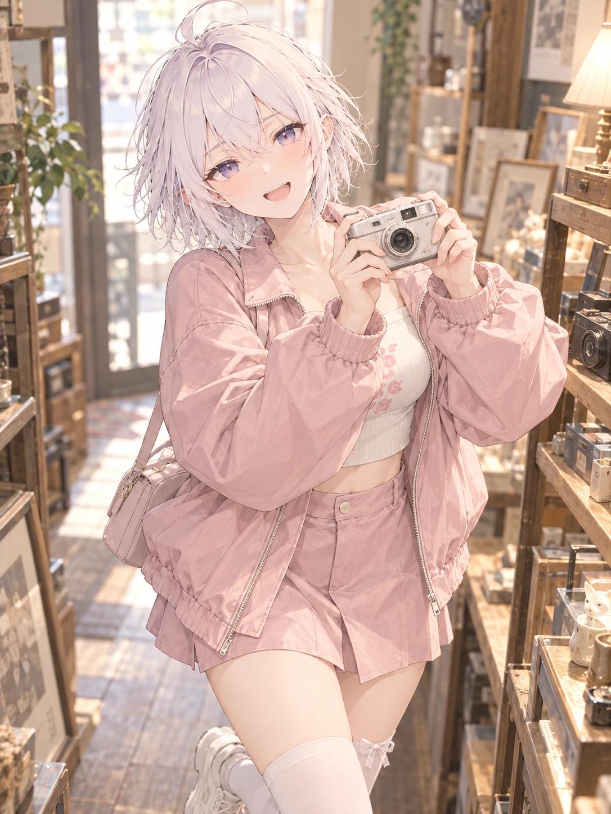

其他制作记录 / 逐页阅读
N13 · 粉色裤裙逛旧物店
已目视检查 · 穿搭、表情与相机互动合适；头部倾斜略明显且下肢为近景裁切，候选待审

检查与反馈记录
- 粉色宽松短外套、米白短上衣、同色裤裙和白袜白鞋与B2_06 R2C3一致，整体轻松协调，带扣和挂链没有堆叠。
- 旧物店低矮陈列架和小数码相机主题清楚；表情眼睛发亮、眉梢一高一低，有期待和小得意。
- 双手共同托住同一台相机，手腕和机身透视基本清楚；放大检查未见明显多手或手指粘连。
- 头部有较明显但仍连续的自然倾斜，颈部接续可辨；比N12更偏俏皮，后续需控制倾斜幅度。
- 画面按计划裁到大腿附近，只露出部分下肢，不能用作全腿、膝踝和鞋的比例验收；候选待用户审阅。